ဆွမ်းလှူဒါန်းရခြင်းအကျိုး
- အသက်ရှည်ခြင်း ၊ ရွှေဆင်းကဲ့သို့လှပခြင်း ၊
- အားခွန်ဗလကြီးမားခြင်း ၊ ပစ္စည်းဥစ္စာချမ်းသာပေါများခြင်း.......
- ဉာဏ်ပညာကြီးမားထက်မြတ်ခြင်း တို့ဖြစ်သည်။
မြို့ဦးမဟာဗောဓိဆုတောင်းပြည့်စေတီတော်
ကုသိုလ်ကျန်းမာ ပညာစီးပွား
ဒီရေလား တိုးပွားကြပါစေ
သင်္ကြန်အကြို
၁၃၈၁ ခုနှစ် နှောင်းတန်းခူးလပြည့်ကျော်(၅)ရက်
သင်္ကြန်အကျ
၁၃၈၁ ခုနှစ် နှောင်းတန်းခူးလပြည့်ကျော်(၆)ရက်
သင်္ကြန်အကြတ်
၁၃၈၁ ခုနှစ် နှောင်းတန်းခူးလပြည့်ကျော်(၇)ရက်
သင်္ကြန်အကြတ်
၁၃၈၁ ခုနှစ် နှောင်းတန်းခူးလပြည့်ကျော်(၈)ရက်
သင်္ကြန်အတက်
၁၃၈၁ ခုနှစ် နှောင်းတန်းခူးလပြည့်ကျော်(၉)ရက်
လက်ရှိအလှူရှင်မျာ:
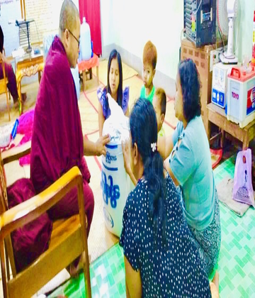
ကျန်ရစ်သူဦးသန်းအောင်နှင့်သားသမီး မိသားစု
ကွယ်လွန်သူ ဒေါ်အေးလေး အား ရည်စူး ရည်မှန်း၍ဆွမ်းဆန်တော်
ဦးကျော်ကျော်ဦး+ဒေါ်စန်းစန်းမွန် သား မောင်ထက်ဦးလွင် မိသားစု
မဟာဝေပုလ္လဓမ္မာရုံတော်အတွက် အလှူတော်ငွေကျပ်ကိုးသိန်:
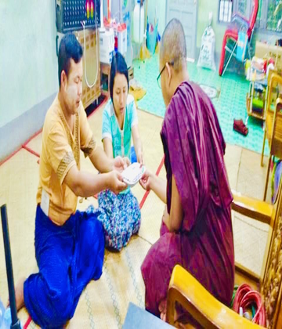
ဦးအောင်နိုင်နိုင်မင်း+ဒေါ်နန်းသူဇာမိသားစု
မဟာဝေပုလ္လဓမ္မာရုံတော်အတွက် အလှူတော်ငွေကျပ်(ကိုးသောင်း )
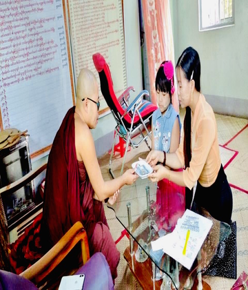
ကိုဟိန်းပြည့်စုံ+မသီရိခင်ခင် သမီးမသာယာရှင်းသန့်မိသားစု
မဟာဝေပုလ္လဓမ္မာရုံတော် အတွက် အလှူတော်ငွေကျပ် သုံးသောင်:
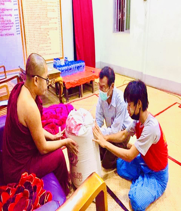
သာပေါင်းမြို့ ထွန်စက်ကုန်းရွာနေ
ဦးမောင်ငယ် သား မောင်ရှိုင်းထက်ကျော် မိသားစု
ဦးမောင်ငယ် သား မောင်ရှိုင်းထက်ကျော် မိသားစု
ဆွမ်းဆန်တော် (၁)အိပ် တို့ကို ဆက်ကပ်လှူဒါန်းထားပါသည်
ကိုဟန်သူထွန်း+ဒေါက်တာ ဇာဖြူမောင်မောင်
သမီ:မပိုပြည့်လျှံကိုထိုက်အောင်ကျော်+မလတ်လတ်စိုးအောင်
မိသားစု
သမီ:မပိုပြည့်လျှံကိုထိုက်အောင်ကျော်+မလတ်လတ်စိုးအောင်
မိသားစု
သာပေါင်းမြို့ ရန်အောင်မြင်လမ်းနေ ဖခင်ကြီးအားရည်စူး၍ မိခင်ကြီး ဒေါ်မြင့်မြင့်သန်း ကို အမှူးထားကာဆွမ်းဆန်တော် (၃)အိပ် တို့ကို ဆက်ကပ်လှူဒါန်းထားပါသည်

ဒေါ်သန်းညွန့်ရီ (မတ် ဆေးဆိုင်)၊
ဆရာဦးညီညီဇော် +ဒေါ်ဧပရယ်ဝတ်ရည်ဝင်း
ရွှေရောင်မော်ကွန်း ကိုယ်ပိုင်အထက်တန်းကျောင်း
မိသားစု နှင့်
ဦးမြတ်မင်းစိုး+ဒေါ်ငြိမ်းသန်း မိသားစုမှ
သမီးလေး မမိုးမြတ်မြတ်သူ ရဲ့ (၈)နှစ်ပြည့် မွေးနေ့အလှူအဖြစ်ဖြင့်
ဆရာဦးညီညီဇော် +ဒေါ်ဧပရယ်ဝတ်ရည်ဝင်း
ရွှေရောင်မော်ကွန်း ကိုယ်ပိုင်အထက်တန်းကျောင်း
မိသားစု နှင့်
ဦးမြတ်မင်းစိုး+ဒေါ်ငြိမ်းသန်း မိသားစုမှ
သမီးလေး မမိုးမြတ်မြတ်သူ ရဲ့ (၈)နှစ်ပြည့် မွေးနေ့အလှူအဖြစ်ဖြင့်
ဆွမ်းဆန်တော်(၂)အိပ် ၊ ဆီ (၃)ပိဿာ နှင့် ဆွမ်းဆန်တော်(၁)အိပ် နှင့် ဆွမ်းဆန်တော်(၃)အိပ် တို့ကို စုပေါင်းကာဖြင့် လှူဒါန်းထားပါသည်
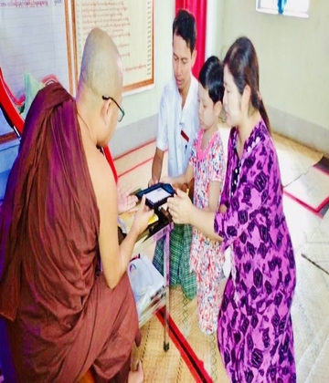
သာပေါင်းမြို့ ရပ်ကွက်(၂) ဗဟိုလမ်းနေ
ဦးဟန်မင်းထွန်း+ဒေါ်သီရိဝင်း
သမီး မချစ်ခွန်းသီ မိသားစုမှ
ယနေ့ကျရောက်သော ဦးဟန်မင်းထွန်း ရဲ့ (၃၈)နှစ်ပြည့်
မွေးနေ့အလှူတော်မင်္ဂလာအဖြစ်
ဦးဟန်မင်းထွန်း+ဒေါ်သီရိဝင်း
သမီး မချစ်ခွန်းသီ မိသားစုမှ
ယနေ့ကျရောက်သော ဦးဟန်မင်းထွန်း ရဲ့ (၃၈)နှစ်ပြည့်
မွေးနေ့အလှူတော်မင်္ဂလာအဖြစ်
နဝကမ်မအလှူတော် ငွေ ကျပ်(သုံးသောင်း)တို့ကို ဆက်ကပ် လှူဒါန်းထားပါသည်
သာပေါင်းမြို့ ရပ်ကွက်(၂) အ ထ ကကျောင်းလမ်းနေ
ဖခင်ကြီးဦးဇော်မင်းအားရည်စူး ရည်မှန်းပြီး
ဦးမျိုးမင်းအောင်+ဒေါ်ဇင်မာမင်း သမီး သွန်းနှင်းဆက်
မိသားစုမှ
ယနေ့ကျရောက်သော ဒေါ်ဇင်မာမင်း ရဲ့
မွေးနေ့အလှူတော်မင်္ဂလာအဖြစ်
ဖခင်ကြီးဦးဇော်မင်းအားရည်စူး ရည်မှန်းပြီး
ဦးမျိုးမင်းအောင်+ဒေါ်ဇင်မာမင်း သမီး သွန်းနှင်းဆက်
မိသားစုမှ
ယနေ့ကျရောက်သော ဒေါ်ဇင်မာမင်း ရဲ့
မွေးနေ့အလှူတော်မင်္ဂလာအဖြစ်
ဆွမ်းဂျိုင့် နှင့်ထာဝရဆွမ်းပဒေသာပင်အတွက်အလှူတော် ငွေ ကျပ်(ငါးသောင်း)တို့ကိုဆက်ကပ် လှူဒါန်းထားပါသည်
သာပေါင်းမြို့ စက္ကူစက်ရုံနေ
ကွယ်လွန်သူ ဦးလှမောင်+ဒေါ်မယ်ကျန်
တို့ကို ရည်စူး ရည်မှန်း၍
ဒေါ်ခင်ထွေးကြည် နှင့် မောင်နှမ မိသားစု မှ ဆောက်လုပ်ဆဲဖြစ်သော
မဟာဝေပုလ္လဓမ္မာရုံတော်အတွက်
ကွယ်လွန်သူ ဦးလှမောင်+ဒေါ်မယ်ကျန်
တို့ကို ရည်စူး ရည်မှန်း၍
ဒေါ်ခင်ထွေးကြည် နှင့် မောင်နှမ မိသားစု မှ ဆောက်လုပ်ဆဲဖြစ်သော
မဟာဝေပုလ္လဓမ္မာရုံတော်အတွက်
အလှူတော်ငွေကျပ်(ငါးသောင်း)တို့ကိုဆက်ကပ်လှူဒါန်းထားပါသည်
သာပေါင်းမြို့ စက္ကူစက်ရုံနေ
ဦးအောင်တင်+ဒေါ်လှသိန်း
အားရည်စူး ရည်မှန်း၍
သမီး ဒေါ် ညိုညိုအောင် မိသားစု မှ
ဆောက်လုပ်ဆဲဖြစ်သော
မဟာဝေပုလ္လဓမ္မာရုံတော်အတွက်
ဦးအောင်တင်+ဒေါ်လှသိန်း
အားရည်စူး ရည်မှန်း၍
သမီး ဒေါ် ညိုညိုအောင် မိသားစု မှ
ဆောက်လုပ်ဆဲဖြစ်သော
မဟာဝေပုလ္လဓမ္မာရုံတော်အတွက်
အလှူတော်ငွေကျပ်(တစ်သိန်း)တို့ကိုဆက်ကပ်လှူဒါန်းထားပါသည်
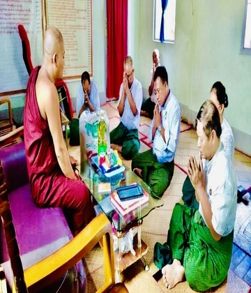
သာပေါင်းမြို့ ပြည်ထောင်စုကြံ့ခိုင်ရေးနှင့်ဖွံ့ဖြိုးရေး
ပါတီ(၁၀)နှစ်ပြည့်အထိမ်းအမှတ်အဖြစ်ဖြင့်
ပါတီ(၁၀)နှစ်ပြည့်အထိမ်းအမှတ်အဖြစ်ဖြင့်
ဆွမ်းဆန်တော် ဆီ သကြား နို့ဆီ လဘက်ခြောက် ကော်ဖီမစ် ဆား အစရှိသည်တို့ကို ဆက်ကပ် လှူဒါန်းထားပါသည်
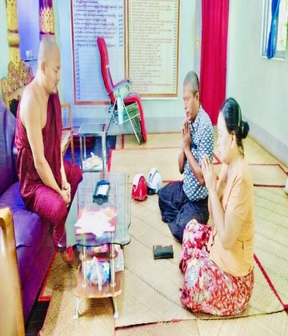
သာပေါင်းမြို့ တန်(၂၀၀)ပျော့ဖတ်စက်ရုံ နေ ကွယ်လွန်သူ
မိခင်ကြီး ဒေါ်ကျင်စိန်(၃)နှစ်ပြည့်အား ရည်စူး ရည်မှန်း၍
ဦးမြင့်လှိုင်+ဒေါ်ခင်ဌေးဝင်း မိသားစု မှ ဆောက်လုပ်ဆဲဖြစ်
သောမဟာဝေပုလ္လဓမ္မာရုံတော်အတွက်
မိခင်ကြီး ဒေါ်ကျင်စိန်(၃)နှစ်ပြည့်အား ရည်စူး ရည်မှန်း၍
ဦးမြင့်လှိုင်+ဒေါ်ခင်ဌေးဝင်း မိသားစု မှ ဆောက်လုပ်ဆဲဖြစ်
သောမဟာဝေပုလ္လဓမ္မာရုံတော်အတွက်
အလှူတော်ငွေကျပ်(သုံးသောင်း)တို့ကိုဆက်ကပ်လှူဒါန်းထားပါသည်
သာပေါင်းမြို့ ရပ်ကွက်(၃)နေ စာရေးဆရာမ မကျေးဥ (ခ)
ဒေါ်ဝင်းကြည် အသက်(၆၂)နှစ် ကွယ်လွန်ခြင်း တစ်လပြည့်
အား လွမ်းဆွတ်သတိရခြင်းများစွာဖြင့် ငယ်သူငယ်ချင်း
များမှ ရည်စူး ရည်မှန်းပြီး
ဒေါ်ဝင်းကြည် အသက်(၆၂)နှစ် ကွယ်လွန်ခြင်း တစ်လပြည့်
အား လွမ်းဆွတ်သတိရခြင်းများစွာဖြင့် ငယ်သူငယ်ချင်း
များမှ ရည်စူး ရည်မှန်းပြီး
အရုဏ်ဆွမ်း တို့ကို ဆက်ကပ် လှူဒါန်းထားပါသည်
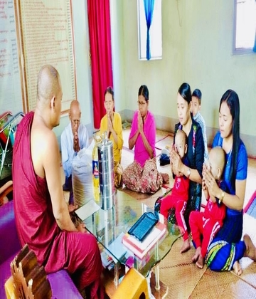
သာပေါင်းမြို့ ရပ်ကွက်(၃) ရန်အောင်မြင်လမ်းနေ ဦးစိုးမင်း
အောင်+ဒေါ်ယဥ်မင်းမြတ် သားလေး မောင်သတိုးစွမ်းရည်ထက် မောင်သုတစွမ်းရည်
ထက်မိသားစုမှ ယနေ့ကျ
ရောက်သော သား လေး မောင် သတိုးစွမ်းရည်ထက်
မောင်သုတစွမ်းရည်ထက် ရဲ့ (၂) နှစ် မြောက်မွေးနေ့အလှူ
တော်မင်္ဂလာအဖြစ်
အောင်+ဒေါ်ယဥ်မင်းမြတ် သားလေး မောင်သတိုးစွမ်းရည်ထက် မောင်သုတစွမ်းရည်
ထက်မိသားစုမှ ယနေ့ကျ
ရောက်သော သား လေး မောင် သတိုးစွမ်းရည်ထက်
မောင်သုတစွမ်းရည်ထက် ရဲ့ (၂) နှစ် မြောက်မွေးနေ့အလှူ
တော်မင်္ဂလာအဖြစ်
ဆွမ်းဂျိုင့် နှင့်ဆွမ်းဆန်တော် ဆီ တို့ကိုဆက်ကပ် လှူဒါန်းထားပါသည်
မောင်အောင်မျိုးကျော်+ မရင်ရင်နွယ် တို့ရဲ့ မင်္ဂလာဦးအလှူတော်
နေ့ဆွမ်းဆွမ်းဆန်တော် ဆီ ကြက်သွန်နီ တို့ကို ဆက်ကပ်လှူဒါန်းထားပါသည်
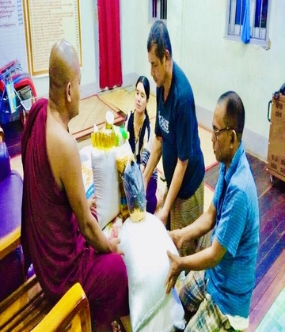
သာပေါင်းမြို့ လှေကြီးတက်ကျေးရွာနေ
ဗိုလ်မှူးခင်မောင်
ထူး(ငြိမ်း)ဒေါ်မေသွယ်နိုင် မိသားစု နှင့် သာပေါင်းမြို့ စက္ကူ
စက်ရုံ ဝန်ထမ်းမိသားစုများရဲ့ လစဥ် ဆွမ်းဆန်တော် အလှူ
ကို အကျိုးတော်ဆောင် ဒါယကာများမှ စီစဥ်၍
ထူး(ငြိမ်း)ဒေါ်မေသွယ်နိုင် မိသားစု နှင့် သာပေါင်းမြို့ စက္ကူ
စက်ရုံ ဝန်ထမ်းမိသားစုများရဲ့ လစဥ် ဆွမ်းဆန်တော် အလှူ
ကို အကျိုးတော်ဆောင် ဒါယကာများမှ စီစဥ်၍
ဆွမ်းဆန်တော်(၁)အိပ် ဆီ တစ်ပိဿာ ပဲတစ်ပိဿာ နှင့် ဆွမ်းဆန်တော် တို့ကို လာရောက် ဆက်ကပ် လှူဒါန်းထားပါသည်တို့ကို ဆက်ကပ်လှူဒါန်းထားပြီး
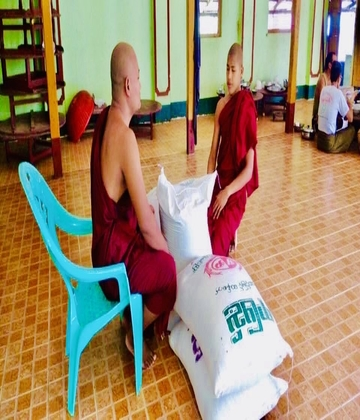
ခေတ္တ ထိုင်းနိုင်ငံနေ ဦးနိုင်နိုင်
သား ရှင် တေဇနိယ (ခ)
မောင်ထက်ဝေဖြိုး မိသားစုတို့မှ
မောင်ထက်ဝေဖြိုး မိသားစုတို့မှ
ဆွမ်းဆန်တော် (5)အိပ် တို့ကို ဆက်ကပ် လှူဒါန်းထားပါသည်
သာပေါင်းမြို့ ချမ်းမြေ့သာယာလမ်းနေ ကိုအောင်ကောင်း
ထက်+မအေမီအောင် သမီးလေး မဖြူစင်လမင်း (ဘုရင်မ
မုန့်တိုက် ) မိသားစုမှ ယနေ့ ကျရောက်သော မအေမီ
အောင် ရဲ့ အသက်(၃၄)နှစ်ပြည့်မွေးနေ့မင်္ဂလာအဖြစ်
ထက်+မအေမီအောင် သမီးလေး မဖြူစင်လမင်း (ဘုရင်မ
မုန့်တိုက် ) မိသားစုမှ ယနေ့ ကျရောက်သော မအေမီ
အောင် ရဲ့ အသက်(၃၄)နှစ်ပြည့်မွေးနေ့မင်္ဂလာအဖြစ်
နဝကမ္မ အလှူတော်ငွေကျပ်တစ်သိန်းတို့ကိုဆက်ကပ် လှူဒါန်းထားပါသည်
သာပေါင်းမြို့ မြို့သစ်(၅)လမ်းနေ ဦးစိုးမိုးအောင်+ဒေါ်
မိုးနှင်းဖြူ သားလှ ရတနာ မောင်ဇာန်ရဲထက်မိသားစုမှ
ယနေ့ ကျရောက်သော သားလှ ရတနာ မောင်ဇာန်ရဲထက်
ရဲ့ အသက်(၈)နှစ်ပြည့်မွေးနေ့မင်္ဂလာအဖြစ်
မိုးနှင်းဖြူ သားလှ ရတနာ မောင်ဇာန်ရဲထက်မိသားစုမှ
ယနေ့ ကျရောက်သော သားလှ ရတနာ မောင်ဇာန်ရဲထက်
ရဲ့ အသက်(၈)နှစ်ပြည့်မွေးနေ့မင်္ဂလာအဖြစ်
နဝကမ္မ အလှူတော်ငွေကျပ်တစ်သိန်းတို့ကိုဆက်ကပ် လှူဒါန်းထားပါသည်
ရန်ကုန်မြို့ တောင်ဥက္ကလာပမြို့နယ် နေကွယ်လွန်သူမိခင်
ကြီး ဒေါ် ယဥ်နု အား ရည်စူး ရည်မှန်း၍
ကြီး ဒေါ် ယဥ်နု အား ရည်စူး ရည်မှန်း၍
ကျန်ရစ်သူ သား သမီး မြေး မြစ် မိသားစုတို့ မှ ဆောက်လုပ်ဆဲဖြစ်သောမဟာဝေပုလ္လဓမ္မာရုံတော်အတွက်အလှူတော်ငွေကျပ်(သုံးသိန်း)တို့ကိုဆက်ကပ်လှူဒါန်းထားပါသည်
သာပေါင်းမြို့ နေ ဦးချစ်တင်+ဒေါ်မရီ မိသားစုမှ ထာဝရ
ဆွမ်းပဒေသာပင် အတွက်
ဆွမ်းပဒေသာပင် အတွက်
အလှူတော်ငွေကျပ်(ငါးသောင်း) ကို ဆက်ကပ် လှူဒါန်းထားပါသည်
.jpg)
သာပေါင်းမြို့ ဘောလုံးကွင်းလမ်းနေ ဒုရဲအုပ် လင်းလင်း
ထွန်း+မအိသဇင်ဖြိုး မိသားစုမှ ယနေ့ ကျရောက်သော ဒုရဲ
အုပ် လင်းလင်းထွန်း ရဲ့ အသက်(၃၂)နှစ်ပြည့်မွေးနေ့မင်္ဂလာ
အဖြစ်
ထွန်း+မအိသဇင်ဖြိုး မိသားစုမှ ယနေ့ ကျရောက်သော ဒုရဲ
အုပ် လင်းလင်းထွန်း ရဲ့ အသက်(၃၂)နှစ်ပြည့်မွေးနေ့မင်္ဂလာ
အဖြစ်
ဆွမ်းဆန်တော် နှင့်တူမ မသျှီသွန်း မှလည်း မုန့် ကော်ဖီမစ် တို့ကိုပါဝင်ဆက်ကပ် လှူဒါန်းထားပါသည်
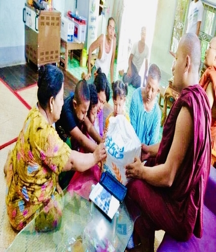
သာပေါင်းမြို့ ကမ်းနားလမ်းနေ ဦးကျော်ဦး+ဒေါ်သန်းဌေး
ဦးမောင်မောင်အေး (မိဘမေတ္တာပွဲရုံ) မိသားစုမှ
ဦးမောင်မောင်အေး (မိဘမေတ္တာပွဲရုံ) မိသားစုမှ
ဆွမ်းဆန်တော် ဆီတို့ကိုဆက်ကပ် လှူဒါန်းထားပါသည်
သာပေါင်းမြို့ ကမ်းနားလမ်းနေ မောင်ကျော်မင်းခန့် မှ
အသက်(၁၈)နှစ်ပြည့်မွေးနေ့မင်္ဂလာအဖြစ်
အသက်(၁၈)နှစ်ပြည့်မွေးနေ့မင်္ဂလာအဖြစ်
ဆွမ်းချိုင့် နှင့်နဝကမ္မ အလှူတော်ငွေကျပ်(သုံးသောင်း)တို့ကိုဆက်ကပ် လှူဒါန်းထားပါသည်
သာပေါင်းမြို့ လှေကြီးတက်ကျေးရွာနေဗိုလ်မှူးခင်မောင်
ထူး(ငြိမ်း)ဒေါ်မေသွယ်နိုင် မိသားစုမှ
ထူး(ငြိမ်း)ဒေါ်မေသွယ်နိုင် မိသားစုမှ
ဆွမ်းဆန်တော်(၁)အိပ် ဆီ ဆာ: တို့ကိုပေးပို့ဆက်ကပ်လှူဒါန်းထားပါသည်
ဒုလ္လဘရဟန်းခံအလှူတော်မင်္ဂလာသာပေါင်းမြို့နယ် လှေ
ကြီးတက်ကျေးရွာနေဦးကျော်ကျော်ခင်+ဒေါ်ခင်
အေးငြိမ်း(OK စတိုးဆိုင်) မိသားစုမှ
ကြီးတက်ကျေးရွာနေဦးကျော်ကျော်ခင်+ဒေါ်ခင်
အေးငြိမ်း(OK စတိုးဆိုင်) မိသားစုမှ
အရုဏ်ဆွမ်းတို့ကိုဆက်ကပ် လှူဒါန်းထားပါသည်
သာပေါင်းမြို့နေ ဦးထွန်းဇော်ဝင်း မှအသက်(၄၄)နှစ်ပြည့်
မွေးနေ့မင်္ဂလာအဖြစ်
မွေးနေ့မင်္ဂလာအဖြစ်
ဆွမ်းချိုင့် နှင့်နဝကမ္မ အလှူတော်ငွေကျပ်(တစ်သောင်းငါးထောင်)တို့ကိုဆက်ကပ် လှူဒါန်းထားပါသည်
မကွေးတိုင်း ပခုက္ကူခရိုင် ပေါက်မြို့နေကိုသက်
ခိုင်+ဒေါက်တာအေးပပစိုးရီ(မြို့နယ်ဆရာဝန်ကြီး)သား
မောင်ကောင်းခန့်လင်းမောင်ရှင်းသန့်လင်း မိသားစုမှ
ခိုင်+ဒေါက်တာအေးပပစိုးရီ(မြို့နယ်ဆရာဝန်ကြီး)သား
မောင်ကောင်းခန့်လင်းမောင်ရှင်းသန့်လင်း မိသားစုမှ
ဆွမ်းဟင်းလျာအတွက် နဝကမ္မ အလှူတော်ငွေကျပ်(နှစ်သိန်း)တို့ကိုဆက်ကပ် လှူဒါန်းထားပါသည်
သာပေါင်းမြို့ ရပ်ကွက်(၃) ကမ်းနားလမ်းနေ ဦးထွန်းထွန်း
နိုင်+ဒေါ်ဇာဇာလွင် သမီး မဇင်ပိုပိုထက် သား မောင်အောင်
ပြည့်စံ (ပြည့်စုံစားသောက်ဆိုင်) မိသားစုမှ ယနေ့ကျ
ရောက်သော သားလေး မောင်အောင်ပြည့်စံ ရဲ့
အသက်(၁၁)နှစ်ပြည့်မွေးနေ့မင်္ဂလာအဖြစ်
နိုင်+ဒေါ်ဇာဇာလွင် သမီး မဇင်ပိုပိုထက် သား မောင်အောင်
ပြည့်စံ (ပြည့်စုံစားသောက်ဆိုင်) မိသားစုမှ ယနေ့ကျ
ရောက်သော သားလေး မောင်အောင်ပြည့်စံ ရဲ့
အသက်(၁၁)နှစ်ပြည့်မွေးနေ့မင်္ဂလာအဖြစ်
သင်္ကန်းနှင့်ဆွမ်းချိုင့် တို့ကိုဆက်ကပ် လှူဒါန်းထားပါသည်
သာပေါင်းမြို့ ရပ်ကွက်(၃) ဥယျာဥ်တန်းလမ်းနေ မိဘများ
ကိုအမှူးထား၍ ဒေါ်ခိုင်မာစိုး ( ဒု ဦးစီး ) မိသားစု မှ ယနေ့
ကျရောက်သော ဒေါ်ခိုင်မာစိုး( ဒု ဦးစီး) ရဲ့အသက်(၄၅)နှစ်
ပြည့်မွေးနေ့မင်္ဂလာအဖြစ်
ကိုအမှူးထား၍ ဒေါ်ခိုင်မာစိုး ( ဒု ဦးစီး ) မိသားစု မှ ယနေ့
ကျရောက်သော ဒေါ်ခိုင်မာစိုး( ဒု ဦးစီး) ရဲ့အသက်(၄၅)နှစ်
ပြည့်မွေးနေ့မင်္ဂလာအဖြစ်
ဆွမ်းဆန်တော်ဆီ တို့ကို လာရောက်ဆက်ကပ် လှူဒါန်းထားပါသည်
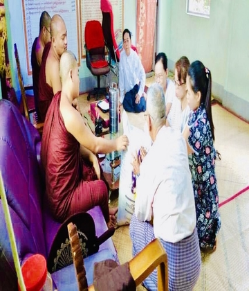
သာပေါင်းမြို့ ရပ်ကွက်((၁)ရပ်ကွက်နေ ကွယ်လွန်သူ မိဘ
များဖြစ်သောဦးတိုက်ကွမ်း+ဒေါ်မြကြည် အစ်ကိုနှင့်
အစ်မဖြစ်သော ဦးထွန်းအောင်စိန်+ဒေါ်မွှေးမွှေး(ခ)ဒေါ်ခင်
စန်းဝင်း တို့အားရည်စူး ရည်မှန်း၍ကျန်ရစ်သူ မိသားစုမှ
များဖြစ်သောဦးတိုက်ကွမ်း+ဒေါ်မြကြည် အစ်ကိုနှင့်
အစ်မဖြစ်သော ဦးထွန်းအောင်စိန်+ဒေါ်မွှေးမွှေး(ခ)ဒေါ်ခင်
စန်းဝင်း တို့အားရည်စူး ရည်မှန်း၍ကျန်ရစ်သူ မိသားစုမှ
ဝါဆိုသင်္ကန်း ဆွမ်းဆန်တော်ဆီ ဆွမ်းချိုင့် ထာဝရ ဆွမ်းပဒေသာပင်အတွက် အလှူတော်ငွေကျပ် (ငါးသောင်း )တို့ကို လာရောက်ဆက်ကပ် လှူဒါန်းထားပါသည်
သာပေါင်းမြို့ စက္ကူစက်ရုံနေ ကိုမြတ်ကျော်စိုး+မမြင့်မြင့်ဦး
သားလေး မောင်မြတ်မင်းကိုကို မိသားစု မှ ယနေ့ကျ
ရောက်သော သားလေး မောင်မြတ်မင်းကိုကို ရဲ့
အသက်(၅)နှစ်ပြည့်မွေးနေ့မင်္ဂလာအဖြစ်
သားလေး မောင်မြတ်မင်းကိုကို မိသားစု မှ ယနေ့ကျ
ရောက်သော သားလေး မောင်မြတ်မင်းကိုကို ရဲ့
အသက်(၅)နှစ်ပြည့်မွေးနေ့မင်္ဂလာအဖြစ်
ထာဝရဆွမ်းပဒေသာပင်အတွက် အလှူတော်ငွေကျပ်(သုံးသောင်း)တို့ကိုပေးပို့ဆက်ကပ် လှူဒါန်းထားပါသည်
သာပေါင်းမြို့ စက္ကူစက်ရုံ ဝန်ထမ်းမိသားစုများရဲ့လစဥ်
ဆွမ်းဆန်တော် အလှူ ကို အကျိုးတော်ဆောင် ဒါယကာ
များမှစီစဥ်၍
ဆွမ်းဆန်တော် အလှူ ကို အကျိုးတော်ဆောင် ဒါယကာ
များမှစီစဥ်၍
ဆွမ်းဆန်တော် ပဲ တို့ကို လာရောက် ဆက်ကပ်လှူဒါန်းထားပါသည်
သာပေါင်းမြို့ ရပ်ကွက်(၃) ရန်အောင်မြင်လမ်းနေ ဒေါ်ခင်
ခင်မိုး သား မောင်ကောင်းထက်ပိုင် သမီး မမြခြူသော်
မောင်နှစ်မ နှစ်ယောက် မိသားစု မှ ယနေ့ကျရောက်သော
ဒေါ်ခင်ခင်မိုး ရဲ့အသက်(၅၂)နှစ်ပြည့်မွေးနေ့မင်္ဂလာအဖြစ်
ခင်မိုး သား မောင်ကောင်းထက်ပိုင် သမီး မမြခြူသော်
မောင်နှစ်မ နှစ်ယောက် မိသားစု မှ ယနေ့ကျရောက်သော
ဒေါ်ခင်ခင်မိုး ရဲ့အသက်(၅၂)နှစ်ပြည့်မွေးနေ့မင်္ဂလာအဖြစ်
သံဃာတော်အရှင်သူမြတ်များနှင့် ပရဟိတကျောင်းသားများ တို့ကိုနေ့ဆွမ်းနှင့်နဝကမ္မ အလှူတော်ငွေတို့ကိုဆက်ကပ် လှူဒါန်းထားပါသည်
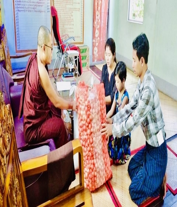
သာပေါင်းမြို့ ရပ်ကွက်(၂) ဗဟိုလမ်းနေ ဦးဟန်မင်း
ထွန်း+ဒေါ်သီရိဝင်း သမီး မချစ်ခွန်းသီ မိသားစုမှ ကျ
ရောက်သော သမီးလေး မချစ်ခွန်းသီ ရဲ့ (၈)နှစ်ပြည့်
မွေးနေ့အလှူတော်မင်္ဂလာအဖြစ်
ထွန်း+ဒေါ်သီရိဝင်း သမီး မချစ်ခွန်းသီ မိသားစုမှ ကျ
ရောက်သော သမီးလေး မချစ်ခွန်းသီ ရဲ့ (၈)နှစ်ပြည့်
မွေးနေ့အလှူတော်မင်္ဂလာအဖြစ်
ဆွမ်းဆန်တော်(၁)အိပ်ကြက်သွန်နီ(၁)အိပ်တို့ကို ဆက်ကပ် လှူဒါန်းထားပါသည်မွေးနေ့ မွေးရက် ကုသိုလ်ဆက်ကောင်းကျိုးမင်္ဂလာဖြစ်စေသော်
သာပေါင်းမြို့ ချမ်းမြေ့သာယာလမ်းနေ ဦးအောင်ခင်+ဒေါ်
ကြင်ကြို့ (ဘုရင်မမုန့်တိုက် )မိသားစုမှ
ကြင်ကြို့ (ဘုရင်မမုန့်တိုက် )မိသားစုမှ
ကိတ်မုန့် တို့ကို ပေးပို့ဆက်ကပ် လှူဒါန်းထားပါသည်
သာပေါင်းမြို့ နေ ဦးချစ်ဝင်းထွန်း+ဒေါ်မေထက်သူ သား
မောင်ဝေယံလင်းထွန်း ၏ ညီ မောင်ဥက္ကာမင်း မိသားစု မှ
ယနေ့ကျရောက်သော သာလေး မောင်ဥက္ကာမင်း ရဲ့(၁)နှစ်
ပြည့်မွေးနေ့
မင်္ဂလာအဖြစ်ဖြင့်
မောင်ဝေယံလင်းထွန်း ၏ ညီ မောင်ဥက္ကာမင်း မိသားစု မှ
ယနေ့ကျရောက်သော သာလေး မောင်ဥက္ကာမင်း ရဲ့(၁)နှစ်
ပြည့်မွေးနေ့
မင်္ဂလာအဖြစ်ဖြင့်
ဆွမ်းဆန်တော်(၁)အိပ်ကြက်သွန်နီ(၁)အိပ်ဆီ ဆပ်ပြာမုန့် နှင့်နဝကမ္မ အလှူတော်ငွေကျပ်(နှစ်သောင်း)တို့ကိုလည်းဆက်ကပ် လှူဒါန်းထားပါသည်
ရန်ကုန်မြို့နေ ဒေါ်ခင်မျိုးမြင့်စိုး ( ဒုတိယညွန့်ကြားရေး
မှူး)ရင်းနှီးမြှုပ်နှံမှုနှင့် ကုမ္ပဏီများညွန်ကြားမှုးဦးစီးဌာန
ပညာရေးပဒေသာပင် အတွက်
မှူး)ရင်းနှီးမြှုပ်နှံမှုနှင့် ကုမ္ပဏီများညွန်ကြားမှုးဦးစီးဌာန
ပညာရေးပဒေသာပင် အတွက်
အလှူတော်ငွေကျပ်(ငါးသောင်း)ကိုလည်းသာပေါင်းမြို့ မြို့ဦးကျောင်းလမ်းနေ ရဟန်းဒါယိကာမကြီး ဒေါ်လှလှ မှ အလှူရှင်ကိုယ်စား လာရောက်ဆက်ကပ် လှူဒါန်းထားပါသည်
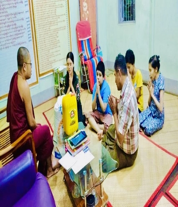
သာပေါင်းမြို့ လှေကြီးတက်ကျေးရွာ စက္ကူစက်ရုံးဝန်းနေ
ဦးစန်းနိုင်ထွေး+ဒေါ်လှကျင် သမီး မထက်မှူးရတီ သား
မောင်ထူးဝမြတ် အဒေါ် ဒေါ်လှရင်မိသားစု တို့ မှ ယနေ့ကျ
ရောက်သော သာလေး မောင် ထူးဝမြတ် ရဲ့(၁၀)နှစ်ပြည့်
မွေးနေ့မင်္ဂလာအဖြစ်ဖြင့်
ဦးစန်းနိုင်ထွေး+ဒေါ်လှကျင် သမီး မထက်မှူးရတီ သား
မောင်ထူးဝမြတ် အဒေါ် ဒေါ်လှရင်မိသားစု တို့ မှ ယနေ့ကျ
ရောက်သော သာလေး မောင် ထူးဝမြတ် ရဲ့(၁၀)နှစ်ပြည့်
မွေးနေ့မင်္ဂလာအဖြစ်ဖြင့်
ဆွမ်းဆန်တော်(၁)အိပ်ဆီ တို့ကိုလည်းဆက်ကပ် လှူဒါန်းထားပါသည်
သာပေါင်းမြို့ လှေကြီးတက်ကျေးရွာ စက္ကူစက်ရုံးဝန်းနေ
ကွယ်လွန်သူ ဖခင်ကြီး ဦးထွန်းဟိန် (၃၅) နှစ်မြောက် အား
ရည်စူး ရည်မှန်း၍ ဇနီးဖြစ်သူ ဒေါ်သန်းကြွေ မိသားစုမှ
ကွယ်လွန်သူ ဖခင်ကြီး ဦးထွန်းဟိန် (၃၅) နှစ်မြောက် အား
ရည်စူး ရည်မှန်း၍ ဇနီးဖြစ်သူ ဒေါ်သန်းကြွေ မိသားစုမှ
ဆွမ်းဆန်တော်(၁)အိပ်နဝကမ္မ အလှူတော်ငွေ တို့ကိုလည်းဆက်ကပ် လှူဒါန်းထားပါသည်
မြောင်းမြမြို့နေ (ဦးကျော်ညွန့်)+ဒေါ်သိန်းကျင် (တခွန်း
အထည်ဆိုင်)မိသားစုမှ
အထည်ဆိုင်)မိသားစုမှ
ခြင်ထောင်(၁၅)လုံး စောင်(၁၅)ထည် အခင်း(၂)ထည် တို့ကို ဆက်ကပ် လှူဒါန်းထားပါသည်
သာပေါင်းမြို့ လှေကြီးတက်ကျေးရွာ စက္ကူစက်ရုံးဝန်းနေ
ဦးမျိုးဝင်းသန်း+နော်အားကြည်ဖော့ သမီးလေး မယွန်းမီမီ
ထက် မိသားစု မှ ယနေ့ကျရောက်သော သမီးလေး မယွန်း
မီမီထက် ရဲ့ (၇)နှစ်ပြည့်မွေးနေ့မင်္ဂလာအဖြစ်ဖြင့်
ဦးမျိုးဝင်းသန်း+နော်အားကြည်ဖော့ သမီးလေး မယွန်းမီမီ
ထက် မိသားစု မှ ယနေ့ကျရောက်သော သမီးလေး မယွန်း
မီမီထက် ရဲ့ (၇)နှစ်ပြည့်မွေးနေ့မင်္ဂလာအဖြစ်ဖြင့်
ဝါဆိုသင်္ကန်းထာဝရဆွမ်းပဒေသာပင်အတွက် အလှူတော်ငွေကျပ်(နှစ်သောင်း)တို့ကိုလည်းဆက်ကပ် လှူဒါန်းထားပါသည်
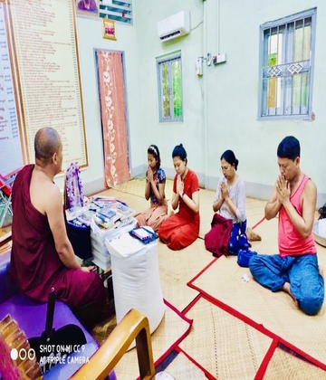
သာပေါင်းမြို့ ကမ်းနားလမ်းနေ ဦးကျော်နိုင်+ဒေါ်ရွှေနီ သမီ
းမအိမ့်ဂျူးဂျူး သား မောင်မင်းခန့်ပိုင် မိသားစု မှ ယနေ့
ကျရောက်သော သမီးလေး မအိမ့်ဂျူးဂျူး ရဲ့(၂၀)နှစ်ပြည့်
မွေးနေ့မင်္ဂလာအဖြစ်ဖြင့်
းမအိမ့်ဂျူးဂျူး သား မောင်မင်းခန့်ပိုင် မိသားစု မှ ယနေ့
ကျရောက်သော သမီးလေး မအိမ့်ဂျူးဂျူး ရဲ့(၂၀)နှစ်ပြည့်
မွေးနေ့မင်္ဂလာအဖြစ်ဖြင့်
ဝါဆိုသင်္ကန်းနဝကမ်မအလှူတော်ငွေ နှင့် ဆွမ်းဆန်တော် ပရဟိတ ကျောင်းသားများအတွက် ဗလာစာအုပ် ဘော့ပင် ကွန်မာဘူး အချိုရည် တို့ကိုလည်းဆက်ကပ် လှူဒါန်းထားပါသည်
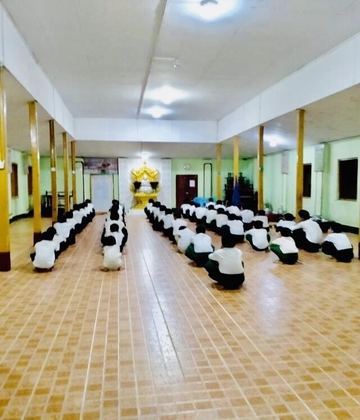
သာပေါင်းမြို့ ချမ်းမြေ့သာယာလမ်းနေ ဦးအောင်ခင်+ဒေါ်
ကြင်ကြို့ (ဘုရင်မမုန့်တိုက် ) မိသားစုမှ
ကြင်ကြို့ (ဘုရင်မမုန့်တိုက် ) မိသားစုမှ
ပေါက်စီ တို့ကို ပေးပို့ ဆက်ကပ် လှူဒါန်းထားပါသည်

သာပေါင်းမြို့ စက္ကူစက်ရုံနေ မိခင်ကြီးဒေါ်ထွေးရင်ကိုအမှူး
ထား၍ သား ကိုခိုင်လွင်ကိုဝင်းထွန်း +မဆွေ သမီး ချစ်
လွန်းဝတီ မိသားစုမှ ယနေ့ကျရောက်သော မဆွေ ရဲ့
(၃၄)နှစ်ပြည့်မွေးနေ့မင်္ဂလာအဖြစ်ဖြင့်
ထား၍ သား ကိုခိုင်လွင်ကိုဝင်းထွန်း +မဆွေ သမီး ချစ်
လွန်းဝတီ မိသားစုမှ ယနေ့ကျရောက်သော မဆွေ ရဲ့
(၃၄)နှစ်ပြည့်မွေးနေ့မင်္ဂလာအဖြစ်ဖြင့်
ဝါဆိုသကငျ် နျး(၃)စုံ တို့ကို ဆက်ကပ် လှူဒါန်းထားပါသည်

သာပေါင်းမြို့ ချမ်းမြေ့သာယာလမ်းနေ
ဦးမောင်မောင်
+ဒေါ်ခင်ခင် မိသားစုမှ
+ဒေါ်ခင်ခင် မိသားစုမှ
အရုဏ်ဆွမ်း တို့ကို ဆက်ကပ် လှူဒါန်းထားပါသည်
သာပေါင်းမြို့ ချမ်းမြေ့သာယာလမ်းနေ (ဦးအုန်းမောင်)ဒေါ်
ခွေးမ မိသားစုမှ
ခွေးမ မိသားစုမှ
နေ့ဆွမ်း တို့ကို ဆက်ကပ် လှူဒါန်းထားပါသည်
သာပေါင်းမြို့ ချမ်းမြေ့သာယာလမ်းနေ ဦးသောင်းစိုး+ဒေါ်
ညိုညိုအောင် မိသားစုမှ
ညိုညိုအောင် မိသားစုမှ
အရုဏ်ဆွမ်း တို့ကို ဆက်ကပ် လှူဒါန်းထားပါသည်
သာပေါင်းမြို့ ကမ်းနားလမ်းနေ ဦးမင်းမင်းမိုက်+ဒေါ်ကြူ
ကြူမြင့် မိသားစုမှ
ကြူမြင့် မိသားစုမှ
အရုဏ်ဆွမ်း တို့ကို ဆက်ကပ် လှူဒါန်းထားပါသည်
သာပေါင်းမြို့ ဘောလုံးကွင်းလမ်းနေ ဒေါ်တင်တင်ဝင်း
အားရည်စူး ရည်မှန်း၍ ဒေါ်ရီမြင့် မိသားစုမှ
အားရည်စူး ရည်မှန်း၍ ဒေါ်ရီမြင့် မိသားစုမှ
အရုဏ်ဆွမ်း တို့ကို ဆက်ကပ် လှူဒါန်းထားပါသည်
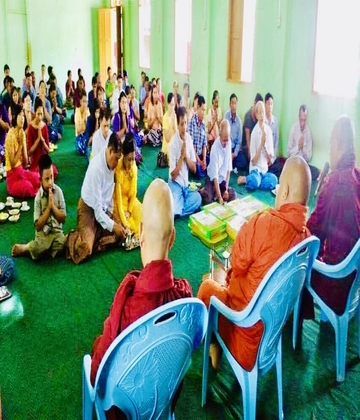
သာပေါင်းမြို့ ဗဟိုလမ်းနေ ကိုဝင်းဇော်ထွန်း(
လက်ထောက်အင်ဂျင်နီယာ- မြို့နယ်စည်ပင်သာယာရေး
အဖွဲ့)မဝတ်ရည်စိုး( ဦးစီးအရာရှိ- ကျေးလက်ဒေသဖွံ့ဖြိုး
တိုးတက်ရေးဦးစီးဌာန) တို့မှ
လက်ထောက်အင်ဂျင်နီယာ- မြို့နယ်စည်ပင်သာယာရေး
အဖွဲ့)မဝတ်ရည်စိုး( ဦးစီးအရာရှိ- ကျေးလက်ဒေသဖွံ့ဖြိုး
တိုးတက်ရေးဦးစီးဌာန) တို့မှ
မင်္ဂလာဦးဆွမ်းကျွေး အလှူတော်မင်္ဂလာ နှင့် ဝါဆိုသကငျ် နျး ကပျ အလှူတောျမငျ်ဂလာ တို့ကို လညျး ဆက်ကပ် လှူဒါန်းထားပါသည်
မြို့ဦးပဌမပြန်စာသင်တိုက်
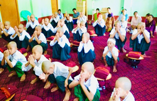
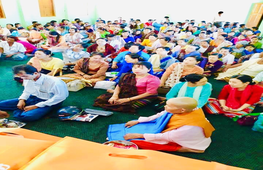
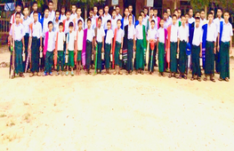

.jpg)
.jpg)